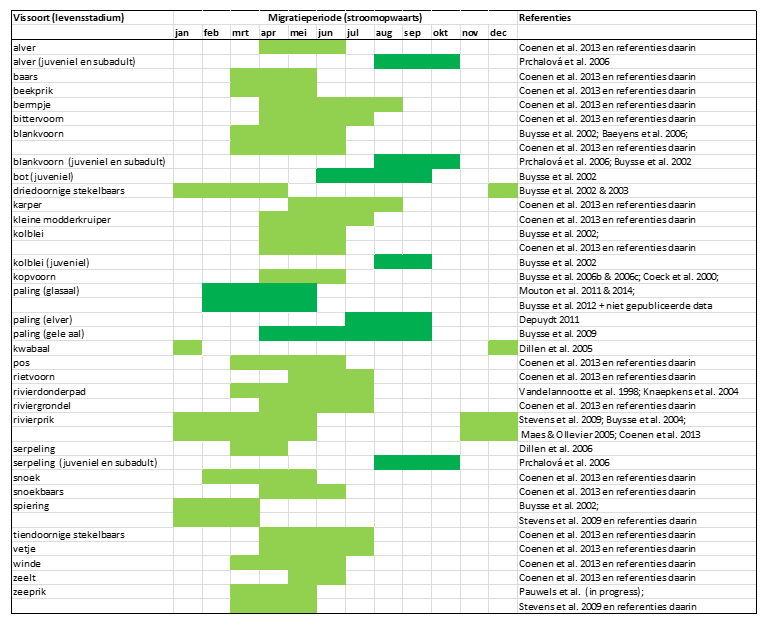
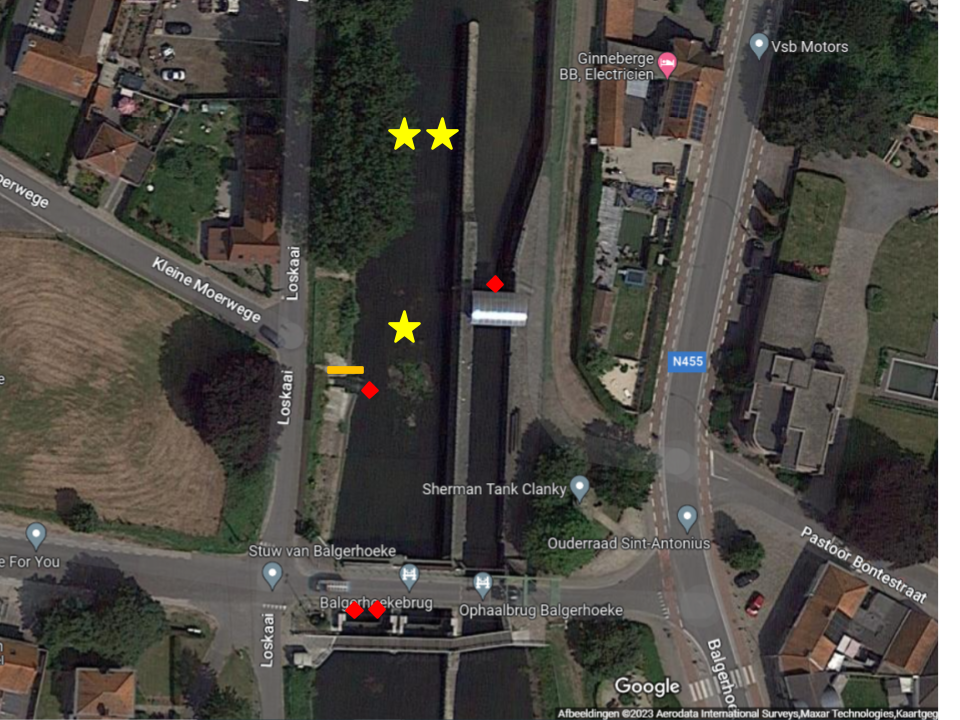
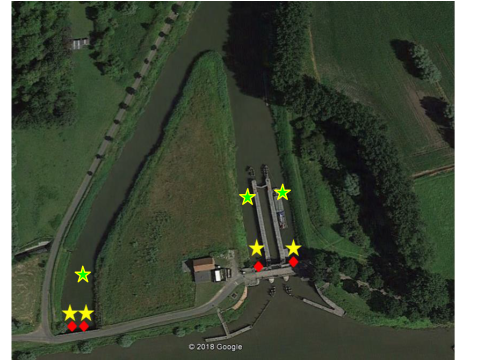

3 Materiaal en methoden
Vissen ondernemen tijdens de voortplantingsperiode meestal massaal gerichte stroomopwaartse migraties gedurende een korte periode. Als gevolg hiervan kunnen er zich aanzienlijke concentraties van vissen voordoen stroomafwaarts van barrières, wat doorgaans grotere vangsten in de opgestelde fuiken tot gevolg heeft. Om de migraties van alle vissoorten nauwkeurig te bestuderen zou men praktisch wekelijks moeten vissen. In het kader van dit onderzoek is dergelijke arbeidsintensieve aanpak niet aangewezen en werd ervoor gekozen om te focussen op de voortplantingsmigratie van de meest voorkomende karperachtigen in april en mei in het AKL, o.a. blankvoorn, kolblei en brasem en op de stroomopwaartse migratie van jonge paling (glasaal, elvers en gele paling) 3.1.
Op basis van de onderzoeken naar de vispasseerbaarheid van de sluisstuwcomplexen op de Ringvaart in Evergem en Merelbeke (Buysse et al. 2002 & 2003) werd voor het nagaan van de migratieroutes en vispasseerbaarheid van de sluisstuwcomplexen van Balgerhoeke en Schipdonk gekozen voor een onderzoek met verschillende vangstmethoden. Uit bovenvermelde studies blijkt dat vissen zich concentreren onder kunstwerken die niet vispasseerbaar zijn. De methodiek berust op het principe van het gericht seizoenaal en temporeel monitoren van vissen net stroomafwaarts van kunstwerken zoals sluizen, stuwen en sifons (Buysse et al., 2003; Buysse, 2003). Om de pakkans te verhogen werd ervoor gekozen om verschillende vangsttechnieken aan te wenden. Doortrekkende karperachtigen, gele paling en andere vissoorten werden gevangen met behulp van dubbele schietfuiken en hokfuiken. Doortrekkende glasalen en elvers werden gemonitord met behulp van palinggoten en artificiële substraten (‘flottangs’).
Concreet werden er substraten en fuiken geplaatst stroomafwaarts van de sluisstuwcomplexen van Balgerhoeke en Schipdonk. De passeerbaarheid van het complex te Balgerhoeke voor stroomopwaartse migratie kon direct ingeschat worden door te bepalen hoeveel van de vissen die stroomafwaarts van Balgerhoeke werden gevangen en gemerkt, verder stroomopwaarts ter hoogte van Schipdonk werden hervangen. Om een inschatting te maken van de passeerbaarheid van het complex te Schipdonk kon deze directe inschatting echter niet gebeuren. Het was immers technisch niet haalbaar om stroomopwaarts van het complex de eventueel succesvol-passerende vissen te vangen. Daarom werd er voor Schipdonk enkel gekeken naar de mate waarin vissen zich concentreerden voor het complex.

Figuur 3.1: Beperkt overzicht van de migratieperiode van de meest voorkomende soorten in de streek
3.1 Vangstmethoden
3.1.1 Dubbele schietfuiken
In functie van de migratie van karperachtigen en gele paling werd er gebruik gemaakt van concentratiefuiken (dubbele schietfuiken). De verankering van de dubbele schietfuiken gebeurt door middel van vaste verankeringspunten en zware gewichten. Vaste punten kunnen o.a. zijn: verankeringspunten aan keermuren, bakens voor scheepvaart of zelf geplaatste palen. Fuiken bestaan uit cilindrische of kegelvormige zakken die op ringen of hoepels bevestigd zijn en die volledig omgeven zijn door een netstructuur. Ze worden op de bodem geplaatst en in ondiep water gebruikt. Schietfuiken bevissen meestal slechts de onderste (halve) meter van de waterkolom terwijl bij gewone fuiken het schutnet meestal tot aan de oppervlakte reikt. Gezien de grote variatie in fuiken zullen de efficiënties ook sterk verschillen.
3.1.2 Palinggoten
Palinggoten worden reeds veelvuldig aangewend om de stroomopwaartse trek van glasalen en jonge paling (elvers) rond knelpunten te faciliteren. Ook aan onze kust bleek het gebruik van palinggoten succesvol te zijn in het vangen van glasaal en jonge palingen o.a. ter hoogte van het Veurne-Ambachtgemaal (Vandamme, 2020). De U-vormige goten (ongeveer 4 m x 0,3 m) die zijn bekleed met aan de ene zijde fijne en aan de andere zijde grove borstels waartussen de glasalen naar boven kunnen klauteren, worden met een helling van 30-40° tegen een betonnen zijwand aan de stroomafwaarts zijde van het knelpunt geplaatst. Om de aantrek van glasaal te maximaliseren worden deze goten idealiter bevloeid met water van een andere samenstelling, bijvoorbeeld door water van een locatie stroomopwaarts het knelpunt over te pompen. Alle palingen die via de borstels de goot beklimmen worden bovenaan opgevangen in een opvangreservoir.
3.1.3 Kunstmatige substraten
Kunstmatige substraten vervaardigd uit kunststof of natuurlijke materialen (houttwijgen) die ofwel worden bevestigd aan vlotters (‘flottangs’) ofwel nabij de bodem worden geplaatst, kunnen fungeren als schuiloord voor glasaal en elvers. Deze substraten worden gedurende een gestandaardiseerde periode geïnundeerd waarna de zich verschuilende glasaaltjes kunnen worden uitgeschud in een opvangbak. Ondanks het feit dat de vangsten per substraat voornamelijk ter hoogte van migratieknelpunten soms hoog kunnen zijn, worden ze vooral voor monitoringsdoeleinden gebruikt. Ook in het Veurne-Ambachtkanaal bleken artificiële substraten (ijzeren frame van 50x50x20 cm gevuld met Enkamat nylon stabilisatiematten, Foto 10) in staat om significante hoeveelheden glasaal te bemonsteren (Vandamme, 2020).
3.2 Studiegebied
Het studiegebied betreft het pand Balgerhoeke-Schipdonk van het Afleidingskanaal van de Leie (AKL) dat begrensd is door de sluisstuwcomplexen van Balgerhoeke en Schipdonk. Wanneer hoge debieten van de Leie tijdig afgevoerd moeten worden, kunnen ter hoogte van Schipdonk de sifons onder het Kanaal Gent-Oostende en de schuifstuwen links en rechts van de Schipdonksluis geopend worden. Het water stroomt verder richting de stuwsluis in Balgerhoeke die bestaat uit twee parallele stuwen met een opening voorzien van schotbalken.
Het AKL werd gegraven in de periode 1847-1860 met als voornaamste doel om overstromingen in de streek rond Gent te vermijden. Het AKL sluit in Deinze aan op de Leie en wordt hoofdzakelijk gevoed door het oppervlaktewater van de Leie en de Poekebeek. Naast deze waterlopen sluiten op het kanaal nog de afwateringsgebieden van de Ede en het Zuidervaartje aan. Het kanaal loopt noordwaarts doorheen Nevele en kruist op de grens Nevele-Zomergem het kanaal van Gent naar Oostende (KGO), daar loopt het kanaal verder op de grens Eeklo-Maldegem en vervolgens op de grens Maldegem-Sint Laureins waar het afbuigt in westelijke richting. Vandaar loopt het kanaal doorheen Damme en verder op de grens Brugge en Knokke-Heist tot aan de zee. Het kanaal is 56 km lang en bestaat uit 3 panden (Deinze-Schipdonk, Schipdonk-Balgerhoeke en Balgerhoeke-Zeebrugge). Het pand Deinze-Schipdonk is gelegen in het Bekken van de Gentse Kanalen en maakt een rechtstreekse verbinding tussen de Leie (in Deinze) en het Kanaal Gent-Brugge (in Schipdonk). Beide hebben dan ook hetzelfde waterniveau van 5.69m TAW. Op het kanaal zijn tussen Deinze en het kanaal Gent-Brugge vaartuigen toegestaan van CEMT-klasse Va (2000-4000 ton). De waterdoorvoer van het Afleidingskanaal van de Leie ter hoogte van de kruising met het Kanaal Gent-Oostende kan geregeld worden door een dubbele constructie bestaande uit sifons onder het KGO en twee stuwen met schotbalken links en rechts van de sluis van Schipdonk. De stuwsluis in Balgerhoeke ligt binnen het Bekken van de Brugse Polders. Het pand Schipdonk- Balgerhoeke ligt gedeeltelijk binnen het Bekken van de Gentse Kanalen. Het waterpeil in het pand Schipdonk-Balgerhoeke ligt normaal slechts zo’n 0.60m lager (5.00m TAW) dan het bovenstrooms pand. Het afwaartse pand Balgerhoeke-Heist (voorhaven van Zeebrugge) heeft als normaal waterpeil 3.30m TAW. Hier is het kanaal enkel bevaarbaar voor vaartuigen uit de CEMT-klasse I (250-400 ton). Het ligt tussen dijken zodat het pand als buffer kan optreden tijdens de periodes van hoogwater in zee. De afwatering naar zee toe gebeurt via het sluizencomplex van Zeebrugge, dat geregelde schuiven bevat.
3.3 Studieperiode en meetfrequentie
Het veldwerk liep van maandag 22/03/2023 tot en met donderdag 25/05/2023. Substraten, glasaalgoten en fuiken werden om de één tot drie dagen geleegd en opnieuw geplaatst.
3.4 Werkwijze
3.4.1 Jonge paling
Om jonge paling te bemonsteren werd gebruik gemaakt van glasaalgoten en substraten. Een palinggoot werd geïnstalleerd stroomafwaarts van de sluizen te Balgerhoeke. Deze is op onderstaande figuur (Figuur 3.2) aangeduid met een oranje streep. Substraten werden geplaatst stroomafwaarts van de stuwen en sluis te Balgerhoeke en stroomafwaarts van de stuwen en sifon te Schipdonk. Deze zijn op onderstaande figuren (Figuur 3.2) aangeduid met rode ruitjes.


Figuur 3.2: Studiegebied (links Balgerhoeke; rechts Schipdonk) met aanduiding van de locaties van de substraten (rode ruitjes), fuiken (gele sterren) en palinggoot (oranje streepje).
De substraten werden onderaan voorzien van een fijnmazig net zodat de kans op ontsnappen bij het opheffen van de substraten minimaal was. Zowel de opvangbak van de palinggoot als de substraten werden geleegd op de oevers. Bij het legen van de substraten werd vijf keer hard geschud boven het opvangnet. De gevangen individuen werden verdoofd met kruidnagelolie en gemeten (lengte en gewicht). In tegenstelling tot de fuikvangsten werden de vangsten van de glasaalgoten en de substraten niet voorzien van een vinkip als merkteken (zie verder). De vangsten van zowel de goten als de substraten werden uitgezet stroomopwaarts van Schipdonk (in het Kanaal Gent-Oostende).
Per locatie werden voor elk staal de lengte van maximum vijftig jonge palingen gemeten en genoteerd. Bij het vangen van een groter aantal, werd een representatief staal van 50 individuen genomen. Hiervoor werden de gevangen glasalen en elvers verdoofd door ze in 1L water te plaatsen waaraan 1.5 ml kruidnagelolie (opgelost in ethanol 96% in verhouding 1/10) was toegevoegd. Bij deze concentratie worden alle individuen binnen de 5 minuten verdoofd waarna ze zonder zichtbare schade binnen de 2 uur na analyse weer bijkomen in een met zuurstof beluchte emmer met water. De lengte werd met een meetlat bepaald tot op 1 mm nauwkeurig.
Bij het bepalen van de lengtefrequenties werden enkel vissen beschouwd waarvan lengtemetingen voorhanden waren (indien er meer dan 50 vissen waren van een bepaalde soort werd een representatief staal gemeten en de surplus enkel geteld). Aantallen en gemiddelde lengte werden uitgezet in functie van de tijd.
3.4.2 Fuikvangsten
Waar mogelijk werden schietfuiken gebruikt. Ter hoogte van Balgerhoeke was het water soms te ondiep, daarom werd ook een hokfuik gebruikt voor deze specifieke locatie (deze hokfuik bleek echter relatief lage vangsten te hebben en werd daarom niet vervangen na diefstal). De locaties van de fuiken worden weergegeven in Figuur 3.2 als gele sterren. De gevangen individuen werden verdoofd met kruidnagelolie (zie eerder), gemeten (lengte) en gemerkt a.d.h.v. een knip aan buikvin. Merken gebeurde enkel t.h.v. Balgerhoeke met als doel om na te gaan of (1) vissen t.h.v. de barrière van Balgerhoeke bleven en (2) of ze de barrière kunnen passeren (i.e., thv Schipdonk gevangen worden). Na het meten en merken, werden de vissen stroomafwaarts van het knelpunt uitgezet. De vangst van de verschillende fuiken op een bepaalde dag op een bepaalde site (i.e., Balgerhoeke, Schipdonk sifon of Schipdonk sluizen) werden samen als één staal beschouwd. Om verschillen in het aantal fuiken en aantal dagen tussen ophalen van de vangsten in rekening te brengen werd gewerkt met de aantallen per fuikdag (catch-per-unit-effort = CPUE) tenzij anders aangegeven.
De gemeenschapsstructuur werd onderzocht in functie van ruimte en tijd m.b.v.
Tabellen die aantallen (per fuikdag) per soort weergegeven per site en datum
PCOA (Bray-Curtis dissimilariteit van de door de vierdemachtswortel getransformeerde aantallen per fuikdag en per soort) met weergave van de belangrijkste soorten.
PERMANOVA met als factoren de datum, site (Balgerhoeke versus Schipdonk) en locatie binnen de site (Bray-Curtis dissimilariteit van de door de vierdemachtswortel getransformeerde aantallen per fuikdag en per soort).
Bij het bepalen van de lengtefrequenties werden enkel vissen beschouwd waarvan lengtemetingen voorhanden waren (indien er meer dan 50 vissen waren van een bepaalde soort werd de surplus enkel geteld en niet gemeten). Het aandeel hervangst en vissen met paaikenmerken werd uitgezet in functie van de tijd.
Referenties
 Bruneel, S., et. al. (2025). 10.21436/inbor.132763058
Bruneel, S., et. al. (2025). 10.21436/inbor.132763058